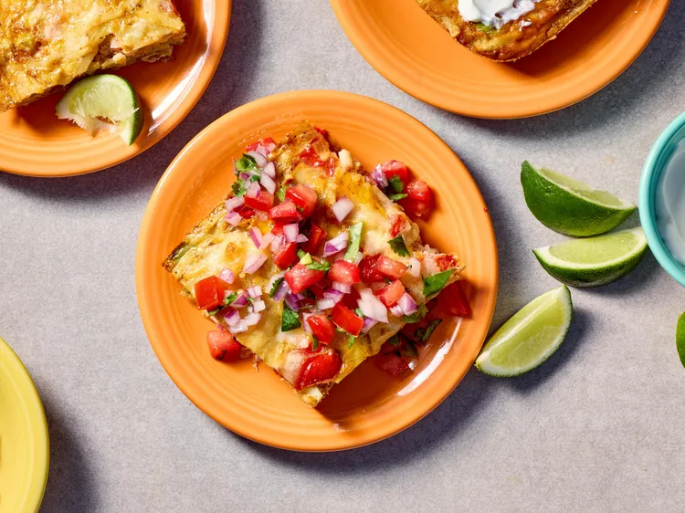

Hash Brown Taco Casserole

the image is from allrecipes
This stir-together spicy egg and potato bake cuts down on prep with the help of frozen shredded hash browns and frozen pepper and onion mix.
ingredients
- 8 large eggs
- 1 tablespoon chili powder
- 1/2 teaspoon salt
- 1/2 teaspoon cayenne pepper (optional)
- 3 cups frozen shredded hash browns, thawed and patted dry
- 1 (14.5-ounce) can diced tomatoes, drained
- 1 cup frozen bell pepper and onion blend, thawed, patted dry, and roughly chopped
- 1 medium jalapeño pepper, seeded and finely chopped
- 1 cup shredded Mexican-style four cheese blend
- pico de gallo, sour cream, and/or lime wedges, for serving
Steps
- Preheat the oven to 400 degrees F (200 degrees C). Generously coat a 2-quart baking dish with cooking spray.
- Whisk together eggs, chili powder, salt, and cayenne (if using) in a large bowl. Stir in hash browns, tomatoes, bell pepper and onion blend, and jalapeño. Pour into the prepared dish. Top with cheese.
- Bake until heated through and eggs are set, 25 to 30 minutes. Serve with pico de gallo, sour cream, and/or lime wedges.
Home